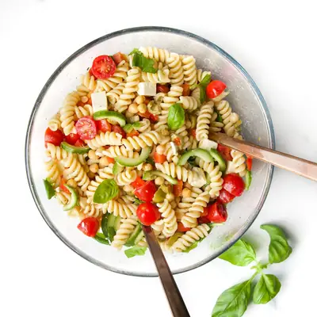

Lunchbox Pasta Salad

Ingredients
- 300g (10.05 oz) dried pasta (, around 3 ½ cups but will depend on pasta shape used. )
- 1 x 400g (14 oz) can chickpeas (, drained, rinsed and patted dry.)
- 1 cucumber (, halved lengthways, seeds removed and sliced into half moons. )
- 200g (7 oz) cherry or grape tomatoes (, halved.)
- ½ bell pepper (, finely diced)
- ¼ cup olives (, roughly chopped)
- 100g (3.5oz) (around ¾ cup) feta cheese (, cut into 1cm cubes )
- 1 cup basil leaves (, torn)
- ⅓ cup (125ml) olive oil
- ¼ cup (60 ml) apple cider vinegar
- 1 tsp Dijon mustard
- 1 tsp honey
- ½ tsp dried Italian herbs
- ½ tsp sea salt / cooking salt
- ⅛ tsp cracked black pepper
Steps
- Bring a large pot of salted water to the boil. Cook the pasta for 2-3 minutes longer than the packet instructions. Drain well.
- While the pasta cooks, prepare the dressing by whisking or shaking all the dressing ingredients together in a jar until well combined.
- Transfer the warm, well drained pasta to a large bowl. Pour over ½ of the dressing and toss well so the pasta absorbs the dressing as it cools.
- Once the pasta has cooled, add the chickpeas, cucumber, tomato, bell pepper, olives and feta.
- Add the remaining dressing and toss gently to combine. Taste and adjust seasoning if needed. Add basil when ready to serve / pack.
Recipe by Healthy Little Foodies, from Healthy Little Foodies. Saved here for personal use; the original has the full notes, tips and photos. Open original